Last updated: 2020-04-02
Checks: 7 0
Knit directory: BloomSail/
This reproducible R Markdown analysis was created with workflowr (version 1.6.0). The Checks tab describes the reproducibility checks that were applied when the results were created. The Past versions tab lists the development history.
Great! Since the R Markdown file has been committed to the Git repository, you know the exact version of the code that produced these results.
Great job! The global environment was empty. Objects defined in the global environment can affect the analysis in your R Markdown file in unknown ways. For reproduciblity it’s best to always run the code in an empty environment.
The command set.seed(20191021) was run prior to running the code in the R Markdown file. Setting a seed ensures that any results that rely on randomness, e.g. subsampling or permutations, are reproducible.
Great job! Recording the operating system, R version, and package versions is critical for reproducibility.
Nice! There were no cached chunks for this analysis, so you can be confident that you successfully produced the results during this run.
Great job! Using relative paths to the files within your workflowr project makes it easier to run your code on other machines.
Great! You are using Git for version control. Tracking code development and connecting the code version to the results is critical for reproducibility. The version displayed above was the version of the Git repository at the time these results were generated.
Note that you need to be careful to ensure that all relevant files for the analysis have been committed to Git prior to generating the results (you can use wflow_publish or wflow_git_commit). workflowr only checks the R Markdown file, but you know if there are other scripts or data files that it depends on. Below is the status of the Git repository when the results were generated:
Ignored files:
Ignored: .Rhistory
Ignored: .Rproj.user/
Ignored: data/Finnmaid_2018/
Ignored: data/GETM/
Ignored: data/Maps/
Ignored: data/Ostergarnsholm/
Ignored: data/TinaV/
Ignored: data/_merged_data_files/
Ignored: data/_summarized_data_files/
Note that any generated files, e.g. HTML, png, CSS, etc., are not included in this status report because it is ok for generated content to have uncommitted changes.
There are no past versions. Publish this analysis with wflow_publish() to start tracking its development.
library(tidyverse)
library(ncdf4)
library(vroom)
library(lubridate)
library(here)
library(seacarb)
library(oce)
library(patchwork)
library(zoo)
library(metR)# route
select_route <- "E"
# latitude limits
low_lat <- 57.3
high_lat <- 57.5
#depth range to subset GETM 3d files
d1_shallow <- 0
d1_deep <- 25
# date limits
start_date <- "2018-06-20"
end_date <- "2018-08-25"
fixed_values <-
read_csv(here::here("Data/_summarized_data_files", "tb_fix.csv"))In order to test how (and how well) the depth-integrated CT estimates can be reproduced if only surface CO2 data from VOS Finnamaid and hydrographical GETM model date were available, two reconstruction approaches were tested:
The following information refer to regional mean values modeled along the Finnmaid track east and within the BloomSail field work area (57.3 - 57.5 N).
Mean daily salinity and temperature profiles were extracted from 3d GETM data (vertically resolved transects).
nc <- nc_open(here::here("data/GETM", "Finnmaid.E.3d.2018.nc"))
#print(nc$var)
lat <- ncvar_get(nc, "latc")
time_units <- nc$dim$time$units %>% #we read the time unit from the netcdf file to calibrate the time
substr(start = 15, stop = 33) %>% #calculation, we take the relevant information from the string
ymd_hms() # and transform it to the right format
t <- time_units + ncvar_get(nc, "time") # read time vector
rm(time_units)
d <- ncvar_get(nc, "zax") # read depths vector
for (var_3d in c("salt", "temp", "SurfaceAge")) {
array <- ncvar_get(nc, var_3d) # store the data in a 3-dimensional array
#dim(array) # should be 3d with dimensions: 544 coordinates, 51 depths, and number of days of month
fillvalue <- ncatt_get(nc, var_3d, "_FillValue")
# Working with the data
array[array == fillvalue$value] <- NA
for (i in seq(1,length(t),1)){
# i <- 3
array_slice <- array[, , i] # slices data from one day
array_slice_df <- as.data.frame(t(array_slice))
array_slice_df <- as_tibble(array_slice_df)
gt_3d_part <- array_slice_df %>%
set_names(as.character(lat)) %>%
mutate(dep = -d) %>%
gather("lat", "value", 1:length(lat)) %>%
mutate(lat = as.numeric(lat)) %>%
filter(lat > low_lat, lat < high_lat,
dep >= d1_shallow, dep <= d1_deep) %>%
#summarise_all("value") %>%
mutate(var = var_3d,
date_time=t[i]) %>%
dplyr::select(date_time, dep, value, var) #%>%
#filter(date_time >= start_date, date_time <= end_date)
if (exists("gt_3d")) {
gt_3d <- bind_rows(gt_3d, gt_3d_part)
} else {gt_3d <- gt_3d_part}
rm(array_slice, array_slice_df, gt_3d_part)
}
rm(array, fillvalue)
}
nc_close(nc)
rm(nc)
gt_3d <- gt_3d %>%
filter(date_time >= start_date & date_time <= end_date) %>%
group_by(dep,var,date_time ) %>%
summarise_all(list(value=~mean(.,na.rm=TRUE))) %>%
ungroup()
gt_3d %>%
vroom_write((here::here("data/_summarized_data_files", file = "gt_3d_long.csv")))
rm(gt_3d, d1_deep, d1_shallow, i, lat, d, t, var_3d)Seawater density was calculated according to TEOS-10.
gt_3d_long <-
read_tsv((here::here("data/_summarized_data_files", file = "gt_3d_long.csv")))
gt_3d <- gt_3d_long %>%
pivot_wider(values_from = value, names_from = var) %>%
mutate(rho = swSigma(salinity = salt, temperature = temp, pressure = dep/10))gt_3d_long <- gt_3d %>%
pivot_longer(c(salt, SurfaceAge, temp, rho), values_to = "value", names_to = "var")
gt_3d_long %>%
ggplot(aes(value, dep,
col=date_time,
group=date_time))+
geom_path()+
scale_y_reverse(expand = c(0,0))+
scale_color_viridis_c(name="Date", trans = "time")+
facet_wrap(~var, scales = "free_x", ncol = 2)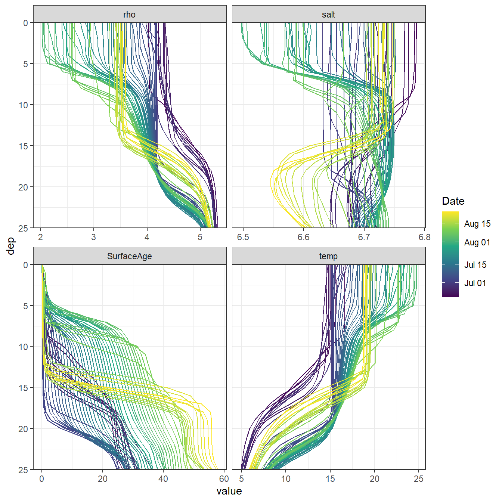
Vertical, 1m-gridded BloomSail CTD profiles were used for comparison with GETM results. Merging both data sets required the BloomSail profiles to be shifted upward by 0.5m. Note that neither sampling location nor time match exactly.
ts_profiles_ID <-
read_csv(here::here("Data/_merged_data_files", "ts_profiles_ID.csv"))
ts_profiles_ID <- ts_profiles_ID %>%
mutate(rho = swSigma(salinity = sal, temperature = tem, pressure = dep/10),
dep = dep - 0.5)GETM results were linearly interpolated to the mean BloomSail time stamp.
ts_gt_3d <- full_join(gt_3d %>% select(date_time, dep, sal = salt, tem = temp, rho),
ts_profiles_ID %>% select(date_time = date_time_ID,
dep, sal, tem, rho),
by = c("date_time", "dep"), suffix=c("_gt", "_ts"))
ts_gt_3d <- ts_gt_3d %>%
arrange(date_time) %>%
group_by(dep) %>%
mutate(tem_gt = na.approx(tem_gt),
sal_gt = na.approx(sal_gt),
rho_gt = na.approx(rho_gt)) %>%
ungroup() %>%
drop_na()ts_gt_3d_long <- ts_gt_3d %>%
pivot_longer(3:8, values_to = "value", names_to = c("var", "source"), names_sep = "_")
ts_gt_3d_long %>%
ggplot(aes(value, dep,
col=date_time,
group=date_time))+
geom_path()+
scale_y_reverse(expand = c(0,0), name="Depth (m)")+
scale_color_viridis_c(name="Date", trans = "time")+
facet_grid(source~var, scales = "free_x")STD profiles modeled with GETM (upper panels, gt) and measured during BloomSail campaign (lower panels, ts)
ts_gt_3d <- ts_gt_3d_long %>%
pivot_wider(values_from = "value", names_from = "source") %>%
mutate(value_diff = gt - ts)
ts_gt_3d %>%
ggplot(aes(value_diff, dep,
col=date_time,
group=date_time))+
geom_vline(xintercept = 0, col="red")+
geom_path()+
scale_y_reverse(expand = c(0,0), name="Depth (m)")+
scale_color_viridis_c(name="Date", trans = "time")+
facet_grid(.~var, scales = "free_x")+
labs(x="Difference GETM (gt) - Bloomsail (ts)")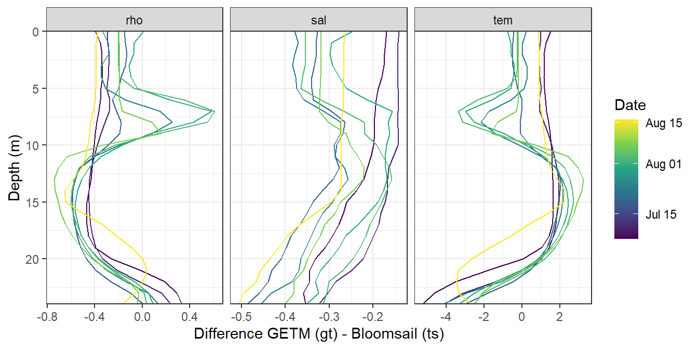
rm(ts_gt_3d, ts_gt_3d_long, ts_profiles_ID)Mean mixed/mixing layer depth estimates based on sewater density and windspeed were extracted from 3h GETM surface data.
nc_2d <- nc_open(here("data/GETM", "Finnmaid.E.2d.2018.nc"))
#print(nc_2d)
lat <- ncvar_get(nc_2d, "latc")
time_units <- nc_2d$dim$time$units %>% #we read the time unit from the netcdf file to calibrate the time
substr(start = 15, stop = 33) %>% #calculation, we take the relevant information from the string
ymd_hms() # and transform it to the right format
t <- time_units + ncvar_get(nc_2d, "time") # read time vector
rm(time_units)
for (var in names(nc_2d$var)[c(3,4,6:12)]) {
#var <- "mld_rho"
array <- ncvar_get(nc_2d, var) # store the data in a 3-dimensional array
fillvalue <- ncatt_get(nc_2d, var, "_FillValue")
array[array == fillvalue$value] <- NA
array <- as.data.frame(t(array), xy=TRUE)
array <- as_tibble(array)
gt_2d_part <- array %>%
set_names(as.character(lat)) %>%
mutate(date_time = t) %>%
filter(date_time >= start_date & date_time <= end_date) %>%
gather("lat", "value", 1:length(lat)) %>%
mutate(lat = as.numeric(lat)) %>%
filter(lat > low_lat, lat<high_lat) %>%
select(-lat) %>%
group_by(date_time) %>%
summarise_all(list(value=~mean(.,na.rm=TRUE))) %>%
ungroup() %>%
mutate(var = var)
if (exists("gt_2d")) {
gt_2d <- bind_rows(gt_2d, gt_2d_part)
} else {gt_2d <- gt_2d_part}
rm(array, fillvalue, gt_2d_part)
}
nc_close(nc_2d)
rm(nc_2d)
gt_2d <- gt_2d %>%
mutate(value = round(value, 3)) %>%
pivot_wider(values_from = value, names_from = var) %>%
mutate(U_10 = round(sqrt(u10^2 + v10^2), 3)) %>%
select(-c(u10, v10))
gt_2d %>%
vroom_write((here::here("data/_summarized_data_files", file = "gt_2d.csv")))
rm(t, var, gt_2d, lat)gt_2d <-
read_tsv((here::here("data/_summarized_data_files", file = "gt_2d.csv")))
gt_2d_daily <- gt_2d %>%
mutate(day = yday(date_time)) %>%
group_by(day) %>%
summarise_all(list(~mean(.,na.rm=TRUE))) %>%
ungroup() %>%
select(-day)
p_sal <- gt_3d %>%
ggplot()+
geom_raster(aes(date_time, dep, fill=salt))+
geom_vline(data=fixed_values, aes(xintercept = start))+
geom_vline(data=fixed_values, aes(xintercept = end))+
scale_fill_viridis_c(name="Salinity ", direction = -1)+
scale_y_reverse()+
coord_cartesian(expand = 0)+
labs(y="Depth [m]")+
theme(axis.title.x = element_blank(),
axis.text.x = element_blank())+
geom_line(data= gt_2d_daily,
aes(x = date_time, y = mld_rho), color = "white")
p_tem <- gt_3d %>%
ggplot()+
geom_raster(aes(date_time, dep, fill=temp))+
geom_vline(data=fixed_values, aes(xintercept = start))+
geom_vline(data=fixed_values, aes(xintercept = end))+
scale_fill_viridis_c(name="Temperature (°C)", option = "B")+
scale_y_reverse()+
coord_cartesian(expand = 0)+
labs(y="Depth [m]", x="")+
theme(axis.title.x = element_blank(),
axis.text.x = element_blank())+
geom_line(data= gt_2d_daily,
aes(x = date_time, y = mld_rho), color = "white")
p_rho <- gt_3d %>%
ggplot()+
geom_raster(aes(date_time, dep, fill=rho))+
geom_vline(data=fixed_values, aes(xintercept = start))+
geom_vline(data=fixed_values, aes(xintercept = end))+
scale_fill_viridis_c(name="d Rho (kg/m^3)", direction = -1)+
scale_y_reverse()+
coord_cartesian(expand = 0)+
labs(y="Depth [m]", x="")+
theme(axis.title.x = element_blank())+
geom_line(data= gt_2d_daily,
aes(x = date_time, y = mld_rho), color = "white")
p_age <- gt_3d %>%
ggplot()+
geom_raster(aes(date_time, dep, fill=SurfaceAge))+
geom_vline(data=fixed_values, aes(xintercept = start))+
geom_vline(data=fixed_values, aes(xintercept = end))+
scale_fill_viridis_c(name="SurfaceAge (d)", direction = -1, trans = "sqrt")+
scale_y_reverse()+
coord_cartesian(expand = 0)+
labs(y="Depth [m]", x="")+
theme(axis.title.x = element_blank())+
geom_line(data= gt_2d_daily,
aes(x = date_time, y = mld_rho), color = "white")
p_sal / p_tem / p_rho / p_age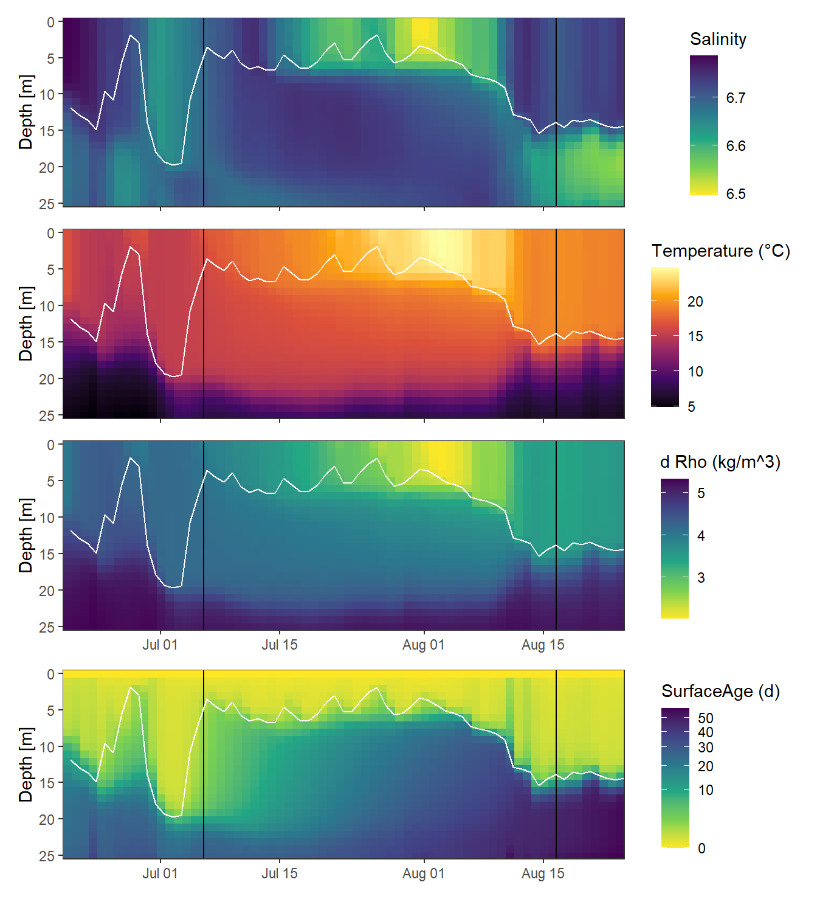
rm(p_sal, p_tem, p_rho)Mean mixed layer depth estimates were also calculated for a range of density threshold criteria, Rho lim, from sewater density based on daily mean GETM STD profiles.
gt_3d_MLD <- expand_grid(gt_3d, rho_lim = seq(0.1,0.5,0.1))
gt_3d_MLD <- gt_3d_MLD %>%
arrange(dep) %>%
group_by(date_time, rho_lim) %>%
mutate(d_rho = rho - first(rho)) %>%
filter(d_rho > rho_lim) %>%
summarise(MLD = min(dep)) %>%
ungroup() %>%
mutate(rho_lim = as.factor(rho_lim))gt_2d_daily_long <- gt_2d_daily %>%
pivot_longer(4:8, names_to = "var", values_to = "value")
p_MLD_gt <- gt_2d_daily_long %>%
ggplot()+
geom_rect(data = fixed_values, aes(xmin=start, xmax=end, ymin=-Inf, ymax=Inf), alpha=0.2)+
geom_hline(yintercept = 0)+
geom_line(aes(date_time, value, col=var))+
scale_y_reverse(limits = c(25,0))+
scale_color_brewer(palette = "Set1", name="GETM variable")+
labs(x="", y="MLD (m)")+
theme(axis.title.x = element_blank())
p_MLD_recalc <- gt_3d_MLD %>%
ggplot()+
geom_rect(data = fixed_values, aes(xmin=start, xmax=end, ymin=-Inf, ymax=Inf), alpha=0.2)+
geom_hline(yintercept = 0)+
geom_line(aes(date_time, MLD, col=rho_lim))+
scale_y_reverse(limits = c(25,0))+
scale_color_viridis_d(name="Rho lim")+
labs(x="", y="MLD (m)")
p_MLD_gt / p_MLD_recalc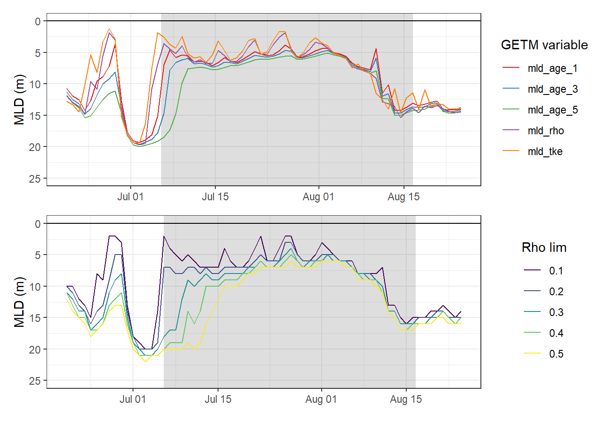
rm(p_MLD_gt, p_MLD_recalc)Finnmaid data, including reconstructed data during LICOS operation failure.
fm <-
read_csv(here::here("Data/_summarized_data_files",
"Finnmaid.csv"))
fm <- fm %>%
filter(Area == "BS",
date > start_date,
date < end_date) %>%
select(-c(Lon, Lat, patm, Teq, xCO2, route, Area)) %>%
mutate(ID = as.factor(ID)) %>%
rename(tem=Tem,
sal=Sal)Calculate based on fixed AT and salinity mean values.
fm <- fm %>%
mutate(CT = carb(24,
var1=pCO2,
var2=fixed_values$AT*1e-6,
S=fixed_values$sal,
T=tem,
k1k2="m10", kf="dg", ks="d", gas="insitu")[,16]*1e6)Calculate regional mean and sd values for each crossing of the area.
fm_ID <- fm %>%
pivot_longer(c(pCO2, sal, tem, cO2, CT), values_to = "value", names_to = "var") %>%
group_by(ID) %>%
mutate(date = mean(date)) %>%
ungroup() %>%
group_by(ID, date, sensor, var) %>%
summarise_all(list(~mean(.), ~sd(.), ~min(.), ~max(.)), na.rm=TRUE) %>%
ungroup() %>%
rename(value=mean)Read BloomSail profile data from 1-5m to fill observational gap of Finnmaid date in second half of June.
ts_profiles_ID_long <-
read_csv(here::here("Data/_merged_data_files", "ts_profiles_ID_long_cum.csv"))
ts_profiles_ID_long_surface <- ts_profiles_ID_long %>%
filter(dep > 1, dep < 5) %>%
mutate(ID = as.factor(ID)) %>%
select(-c(sign, value_cum_sign)) %>%
group_by(ID, date_time_ID, var) %>%
summarise_all(list(~mean(.)), na.rm = TRUE) %>%
ungroup()fm_ID %>%
ggplot()+
geom_rect(data = fixed_values, aes(xmin=start, xmax=end, ymin=-Inf, ymax=Inf), alpha=0.2)+
geom_path(aes(x=date, y=value))+
#geom_ribbon(aes(x=date, y=value, ymax=max, ymin=min, fill="Finnmaid"), alpha=0.3)+
geom_ribbon(aes(x=date, y=value, ymax=value+sd, ymin=value-sd, fill="Finnmaid"), alpha=0.3)+
geom_ribbon(data = ts_profiles_ID_long_surface,
aes(x=date_time_ID, ymin=value-sd, ymax=value+sd, fill="BloomSail"), alpha=0.3)+
geom_point(aes(x=date, y=value, col=sensor))+
geom_point(data = ts_profiles_ID_long_surface,
aes(x=date_time_ID, y=value, col="BloomSail"))+
geom_line(data = ts_profiles_ID_long_surface,
aes(x=date_time_ID, y=value, col="BloomSail"))+
facet_grid(var~., scales = "free_y")+
scale_color_brewer(palette = "Set1")+
scale_fill_brewer(palette = "Set1", name="+/- SD")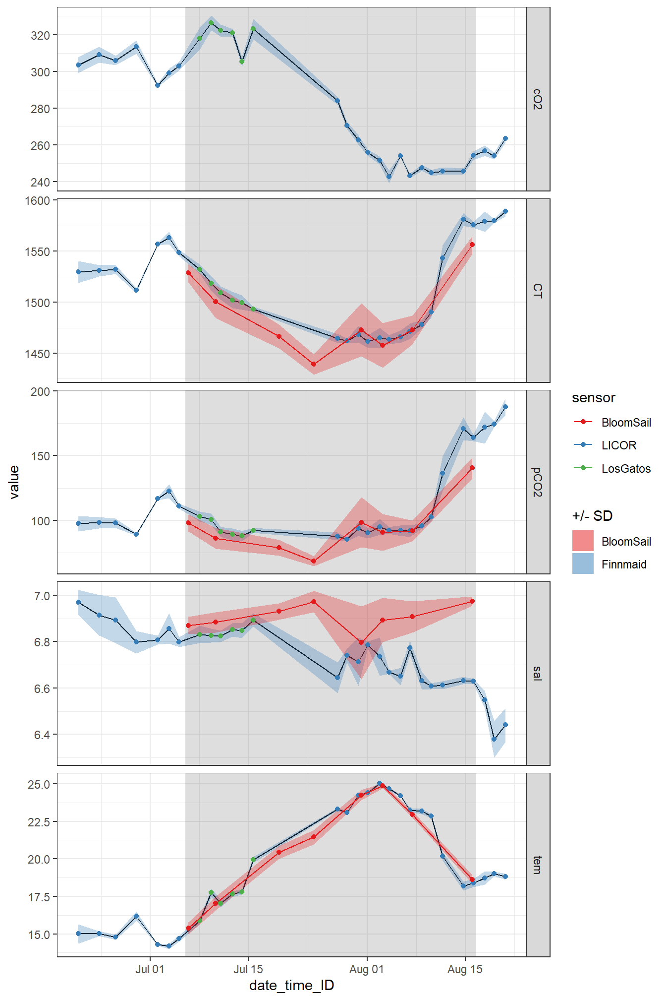
The observational gaps in the Finnmaid SST and CT time series were filled with two BloomSail observations. The time series was restricted to the period where BloomSail observations are available.
ts_gap <- ts_profiles_ID_long_surface %>%
filter(ID %in% c("180718", "180723"),
var %in% c("tem", "CT")) %>%
select(date = date_time_ID, ID, var, value = value) %>%
mutate(sensor = "BloomSail")
fm_ts_ID <- full_join(fm_ID, ts_gap) %>%
arrange(date) %>%
select(-sd) %>%
filter(var %in% c("tem", "CT")) %>%
mutate(period = "BloomSail",
period = if_else(date < fixed_values$start, "pre-BloomSail", period),
period = if_else(date > fixed_values$end, "post-BloomSail", period))
fm_ts_ID %>%
ggplot()+
geom_rect(data = fixed_values,
aes(xmin=start, xmax=end, ymin=-Inf, ymax=Inf), alpha=0.2)+
geom_path(aes(date, value, col=period))+
geom_point(aes(date, value, col=period))+
facet_grid(var~., scales = "free_y")+
scale_color_brewer(palette = "Set1")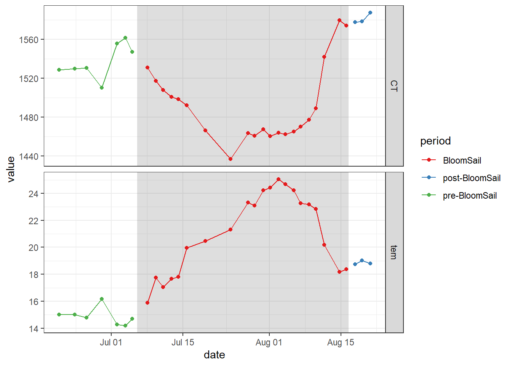
fm_ts_ID <- fm_ts_ID %>%
filter(period == "BloomSail") %>%
select(-period)
rm(fm_ID, fm, ts_gap, ts_profiles_ID_long_surface)Use dCT from Finnmaid and MLD from GETM and calculate iCT as their product.
iCT_MLD <- fm_ts_ID %>%
select(date, var, value) %>%
pivot_wider(values_from = value, names_from = var) %>%
set_names(c("date_time", "SST", "CT"))
iCT_MLD <- full_join(iCT_MLD,
gt_2d_daily %>% select(-c(SSS, SST, U_10)))
iCT_MLD <- iCT_MLD %>%
pivot_longer(cols = 4:8, values_to = "MLD", names_to = "var") %>%
arrange(date_time) %>%
group_by(var) %>%
mutate(MLD = na.approx(MLD)) %>%
ungroup()
iCT_MLD <- iCT_MLD %>%
drop_na() %>%
group_by(var) %>%
arrange(date_time) %>%
mutate(CT_diff = CT - lag(CT),
SST_diff = SST - lag(SST),
CT_i_diff = CT_diff * MLD / 1000,
CT_i_cum = cumsum(replace_na(CT_i_diff, 0))) %>%
ungroup()Total incremental and cumulative CT changes inbetween cruise dates were calculated.
p_iCT <- iCT_MLD %>%
ggplot(aes(date_time, CT_i_diff, fill= var))+
geom_hline(yintercept = 0)+
geom_col(col="black", position = "dodge")+
scale_y_continuous(breaks = seq(-100, 100, 0.2))+
scale_fill_brewer(palette = "Set1", name="GETM variable")+
labs(y="integrated CT changes [mol/m2]", x="date")
p_iCTcum <- iCT_MLD %>%
ggplot(aes(date_time, CT_i_cum,
col= var))+
geom_hline(yintercept = 0)+
geom_line()+
scale_y_continuous(breaks = seq(-100, 100, 0.2))+
scale_color_brewer(palette = "Set1", name="GETM variable")+
labs(y="integrated, cumulative CT changes [mol/m2]")
p_iCT / p_iCTcum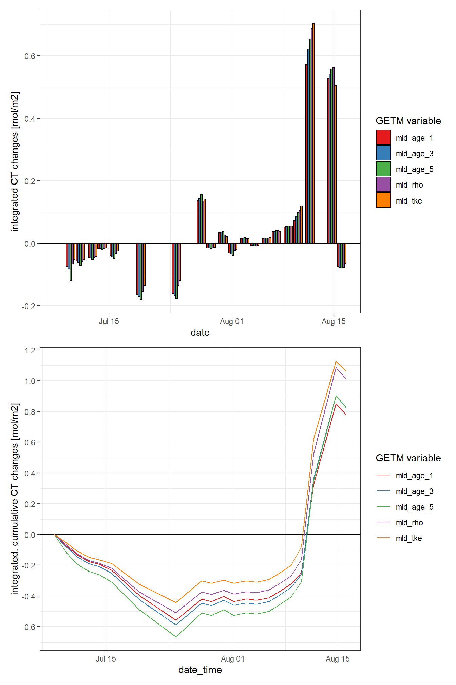
rm(p_iCT, p_iCTcum)As primary production (negative changes in CT) and increase in seawater temperature have a common driver (light), the relation between both changes was investigated and will be used to reconstruct changes in CT throughout the water column.
The following analysis is restricted to the BloomSail period.
fm_ts_ID %>%
filter(var == "tem") %>%
ggplot()+
geom_rect(data = fixed_values, aes(xmin=start, xmax=end, ymin=-Inf, ymax=Inf), alpha=0.2)+
geom_path(aes(x=date, y=value))+
geom_point(aes(x=date, y=value, col="Finnmaid"))+
geom_path(data = gt_2d, aes(x=date_time, y=SST, col="GETM, 3h"))+
geom_path(data = gt_2d_daily, aes(x=date_time, y=SST, col="GETM, daily"))+
scale_color_brewer(palette = "Set1", name="")+
labs(x="", y="SST (°C)")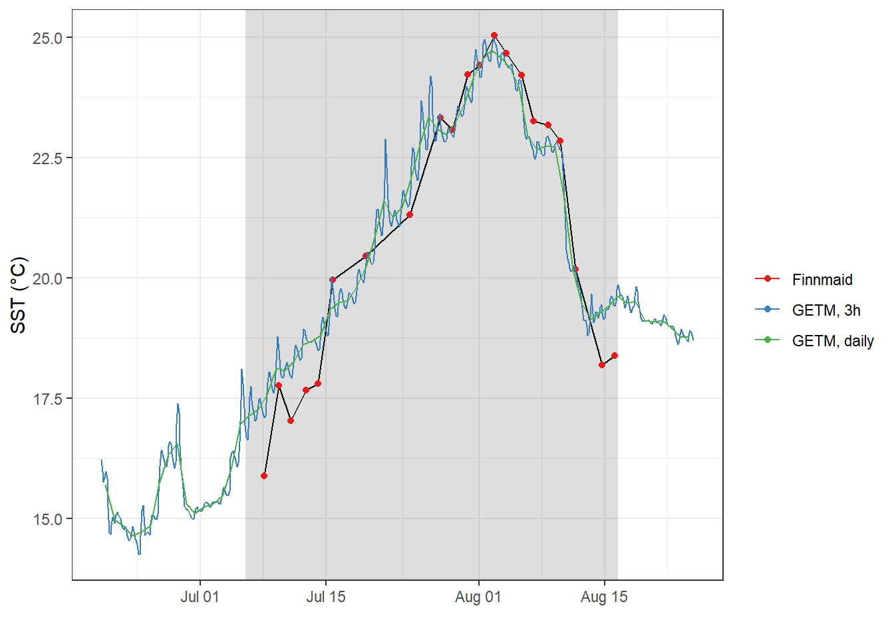
To investigate the change of surface CT with SST, we merge daily mean 2d GETM and Finnmaid data. GETM observations were linearly interpolated to match the time of Finnmaid observations.
CT_tem <- fm_ts_ID %>%
filter(var %in% c("tem", "CT")) %>%
select(date, var, value) %>%
pivot_wider(values_from = value, names_from = var) %>%
set_names(c("date_time", "FM", "CT"))
CT_tem <- full_join(CT_tem,
gt_2d_daily %>% select(date_time, gt = SST))
CT_tem <- CT_tem %>%
arrange(date_time) %>%
mutate(gt = na.approx(gt)) %>%
drop_na() %>%
mutate(date = as.Date(date_time))CT_tem <- CT_tem %>%
pivot_longer(cols = c(FM, gt), values_to = "SST", names_to = "obs")
CT_tem <- CT_tem %>%
group_by(obs) %>%
arrange(date_time) %>%
mutate(CT_diff = CT - lag(CT),
SST_diff = SST - lag(SST),
sign = if_else(CT_diff < 0, "neg", "pos")) %>%
ungroup()
lab_dates <- pretty(CT_tem$date_time)
CT_tem %>%
ggplot()+
geom_hline(yintercept = 0)+
geom_vline(xintercept = 0)+
geom_smooth(aes(SST_diff, CT_diff), method = "lm", se=FALSE)+
geom_point(aes(SST_diff, CT_diff, fill=as.numeric(date_time)), shape=21)+
scale_fill_viridis_c(breaks = as.numeric(lab_dates),
labels = lab_dates,
name="Date")+
guides(fill = guide_legend(override.aes=list(shape=21)))+
facet_wrap(~obs)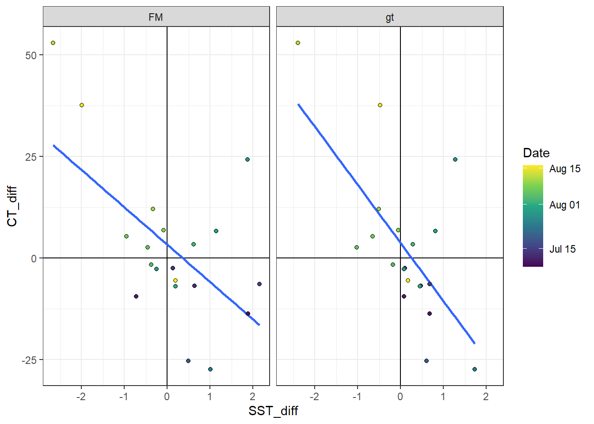
The ratio of surface changes in CT with SST based on GETM SST was used.
CT_tem <- CT_tem %>%
filter(obs == "gt") %>%
mutate(factor = CT_diff/SST_diff,
factor = if_else(is.na(factor), 0, factor))
# CT_tem %>%
# ggplot()+
# geom_hline(yintercept = 0)+
# geom_vline(xintercept = 0)+
# geom_smooth(aes(SST_diff, CT_diff), method = "lm", se=FALSE)+
# geom_point(aes(SST_diff, CT_diff, fill=factor), shape=21)+
# scale_fill_viridis_c()
CT_tem <- expand_grid(CT_tem, dep = unique(gt_3d$dep))
fm_gt_3d <- full_join(gt_3d %>% select(date_time, dep, temp),
CT_tem %>% select(date_time, dep, factor))
fm_gt_3d <- fm_gt_3d %>%
arrange(date_time) %>%
group_by(dep) %>%
mutate(temp = na.approx(temp)) %>%
ungroup() %>%
drop_na()
fm_gt_3d <- fm_gt_3d %>%
group_by(dep) %>%
arrange(date_time) %>%
mutate(tem_diff = temp - lag(temp)) %>%
ungroup() %>%
mutate(CT_diff = tem_diff * factor) %>%
select(-factor)
# fm_gt_3d %>%
# ggplot(aes(tem_diff, CT_diff, col=date_time))+
# geom_point()The reconstructed incremental changes are added up to derive cummulative CT changes throughout the water column.
fm_gt_3d <- fm_gt_3d %>%
group_by(dep) %>%
arrange(date_time) %>%
mutate(time_diff = as.numeric(date_time - lag(date_time)),
CT_diff_daily = CT_diff / time_diff,
CT_cum = cumsum(replace_na(CT_diff, 0))) %>%
ungroup()Changes of seawater parameters at each depth were reconstructed from one cruise day to the next and divided by the number of days inbetween.
fm_gt_3d %>%
arrange(dep) %>%
ggplot(aes(CT_diff_daily, dep, col=as.factor(date_time)))+
geom_vline(xintercept = 0)+
geom_point()+
geom_path()+
scale_y_reverse()+
scale_color_viridis_d()+
labs(x="Change of value inbetween cruises per day")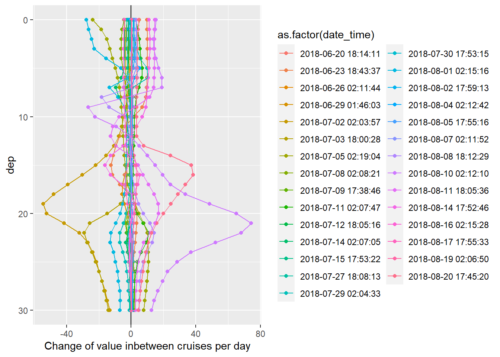
Cumulative changes of seawater parameters were calculated at each depth relative to the first cruise day on July 5.
fm_gt_3d %>%
arrange(dep) %>%
ggplot(aes(CT_cum, dep, col=as.factor(date_time)))+
geom_vline(xintercept = 0)+
geom_point()+
geom_path()+
scale_y_reverse()+
scale_color_viridis_d()+
labs(x="Cumulative change of value")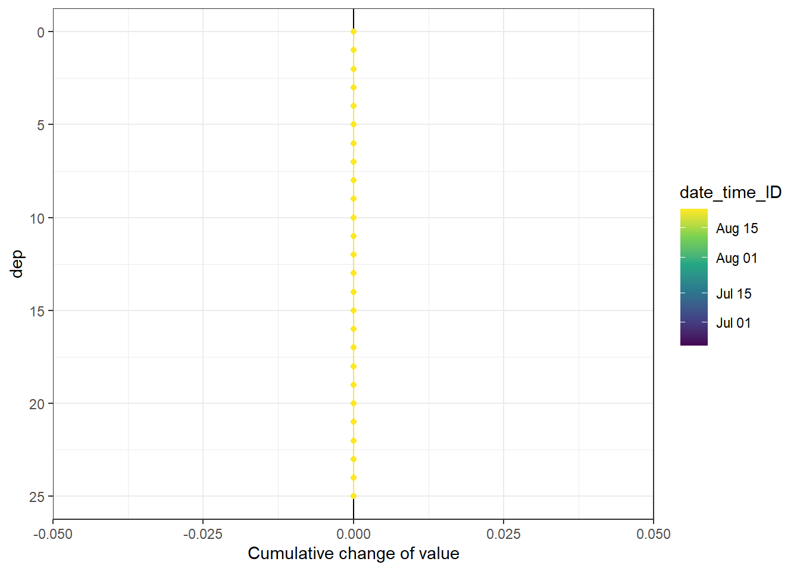
Hoevmoeller plots were generated for the reconstructed daily and cumulative changes in CT. Absolute values are not reproducible with this approach.
bin_CT <- 20
fm_gt_3d %>%
filter(dep < 26) %>%
ggplot()+
geom_contour_fill(aes(x=date_time, y=dep, z=CT_diff_daily),
breaks = MakeBreaks(bin_CT),
col="black")+
geom_point(aes(x=date_time, y=c(25)), size=3, shape=24, fill="white")+
scale_fill_divergent(breaks = MakeBreaks(bin_CT),
guide = "colorstrip",
name="CT (µmol/kg)")+
scale_y_reverse()+
theme_bw()+
labs(y="Depth (m)")+
coord_cartesian(expand = 0)+
theme(axis.title.x = element_blank(),
axis.text.x = element_blank())
rm(bin_CT)bin_CT <- 30
fm_gt_3d %>%
filter(dep < 26) %>%
ggplot()+
geom_contour_fill(aes(x=date_time, y=dep, z=CT_cum),
breaks = MakeBreaks(bin_CT),
col="black")+
geom_point(aes(x=date_time, y=c(25)), size=3, shape=24, fill="white")+
scale_fill_divergent(breaks = MakeBreaks(bin_CT),
guide = "colorstrip",
name="CT (µmol/kg)")+
scale_y_reverse()+
theme_bw()+
labs(y="Depth (m)")+
coord_cartesian(expand = 0)+
theme(axis.title.x = element_blank(),
axis.text.x = element_blank())
rm(bin_CT)Total incremental and cumulative CT changes inbetween cruise dates were calculated for the upper 10 m of the water body.
iCT_dT <- fm_gt_3d %>%
filter(dep < 10) %>%
group_by(date_time) %>%
summarise(CT_i_diff = sum(CT_diff)/1000,
CT_i_cum = sum(CT_cum)/1000) %>%
ungroup()
iCT_dT %>%
ggplot()+
#geom_point(data = cruise_dates, aes(date_time_ID, 0), shape=21)+
geom_col(aes(date_time, CT_i_diff),
position = "dodge", alpha=0.3)+
geom_line(aes(date_time, CT_i_cum))+
scale_color_viridis_d(name="Depth limit (m)")+
scale_fill_viridis_d(name="Depth limit (m)")+
labs(y="iCT [mol/m2]", x="")+
theme_bw()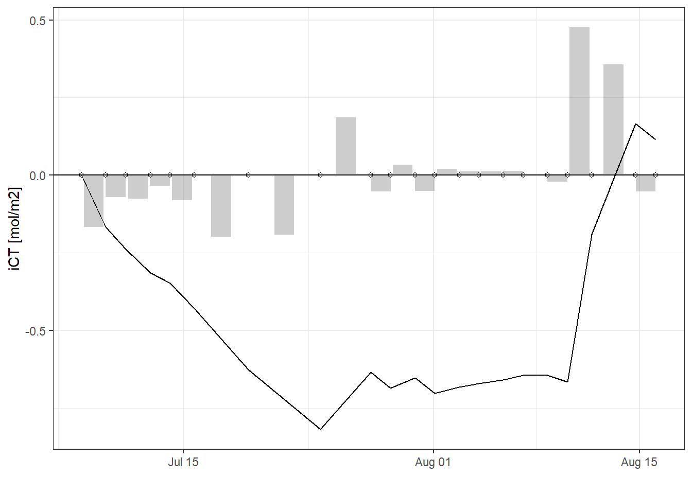
gt_2d %>%
ggplot()+
geom_rect(data = fixed_values, aes(xmin=start, xmax=end, ymin=-Inf, ymax=Inf), alpha=0.2)+
geom_line(aes(x= date_time, y = U_10, col="3-hourly"))+
geom_line(data = gt_2d_daily,
aes(x= date_time, y = U_10, col="Daily mean"))+
labs(y="U (m/s)", x = "Date")+
scale_color_brewer(palette = "Set1", name="", direction = -1)+
theme_bw()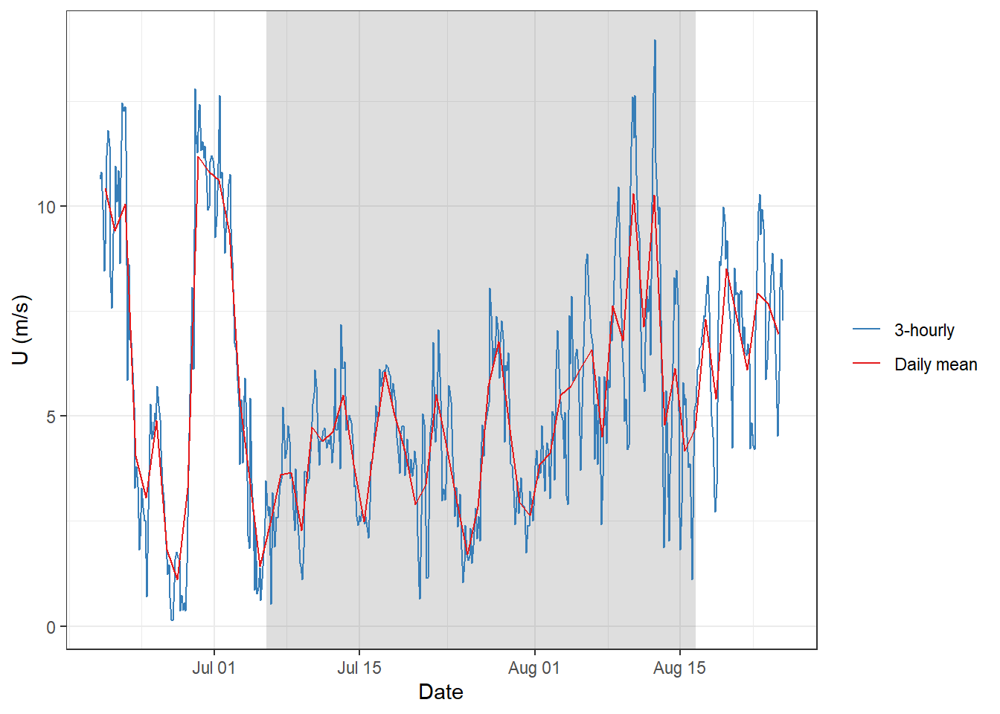
sessionInfo()R version 3.5.0 (2018-04-23)
Platform: x86_64-w64-mingw32/x64 (64-bit)
Running under: Windows 10 x64 (build 18363)
Matrix products: default
locale:
[1] LC_COLLATE=English_Germany.1252 LC_CTYPE=English_Germany.1252
[3] LC_MONETARY=English_Germany.1252 LC_NUMERIC=C
[5] LC_TIME=English_Germany.1252
attached base packages:
[1] stats graphics grDevices utils datasets methods base
other attached packages:
[1] metR_0.5.0 zoo_1.8-6 patchwork_1.0.0 seacarb_3.2.12
[5] oce_1.2-0 gsw_1.0-5 testthat_2.3.1 here_0.1
[9] lubridate_1.7.4 vroom_1.2.0 ncdf4_1.17 forcats_0.4.0
[13] stringr_1.4.0 dplyr_0.8.3 purrr_0.3.3 readr_1.3.1
[17] tidyr_1.0.0 tibble_2.1.3 ggplot2_3.3.0 tidyverse_1.3.0
loaded via a namespace (and not attached):
[1] nlme_3.1-137 bitops_1.0-6 fs_1.3.1
[4] bit64_0.9-7 RColorBrewer_1.1-2 httr_1.4.1
[7] rprojroot_1.3-2 tools_3.5.0 backports_1.1.5
[10] R6_2.4.0 mgcv_1.8-23 DBI_1.0.0
[13] colorspace_1.4-1 withr_2.1.2 sp_1.3-2
[16] tidyselect_0.2.5 gridExtra_2.3 bit_1.1-14
[19] compiler_3.5.0 git2r_0.26.1 cli_1.1.0
[22] rvest_0.3.5 xml2_1.2.2 labeling_0.3
[25] scales_1.0.0 checkmate_1.9.4 digest_0.6.22
[28] foreign_0.8-70 rmarkdown_2.0 pkgconfig_2.0.3
[31] htmltools_0.4.0 highr_0.8 dbplyr_1.4.2
[34] maps_3.3.0 rlang_0.4.5 readxl_1.3.1
[37] rstudioapi_0.10 generics_0.0.2 jsonlite_1.6
[40] RCurl_1.95-4.12 magrittr_1.5 Formula_1.2-3
[43] dotCall64_1.0-0 Matrix_1.2-14 Rcpp_1.0.2
[46] munsell_0.5.0 lifecycle_0.1.0 stringi_1.4.3
[49] yaml_2.2.0 plyr_1.8.4 grid_3.5.0
[52] maptools_0.9-8 formula.tools_1.7.1 promises_1.1.0
[55] crayon_1.3.4 lattice_0.20-35 haven_2.2.0
[58] hms_0.5.2 zeallot_0.1.0 knitr_1.26
[61] pillar_1.4.2 reprex_0.3.0 glue_1.3.1
[64] evaluate_0.14 data.table_1.12.6 modelr_0.1.5
[67] operator.tools_1.6.3 vctrs_0.2.0 spam_2.3-0.2
[70] httpuv_1.5.2 cellranger_1.1.0 gtable_0.3.0
[73] assertthat_0.2.1 xfun_0.10 broom_0.5.3
[76] later_1.0.0 viridisLite_0.3.0 memoise_1.1.0
[79] fields_9.9 workflowr_1.6.0 ellipsis_0.3.0